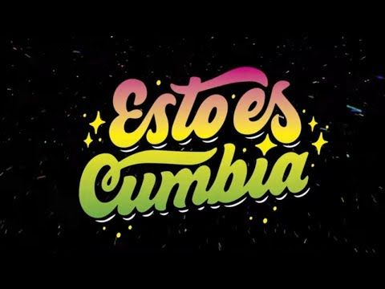
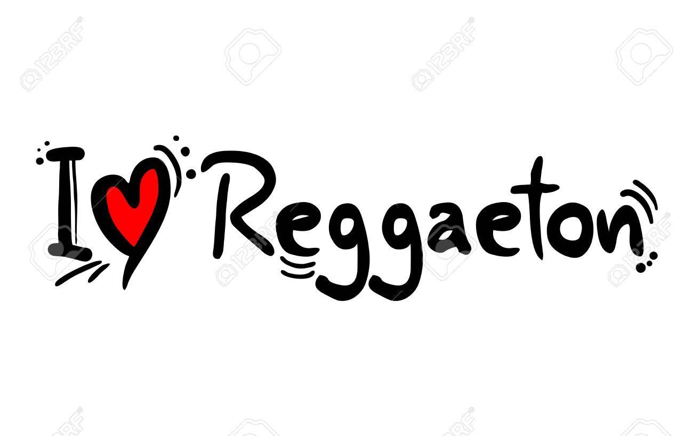
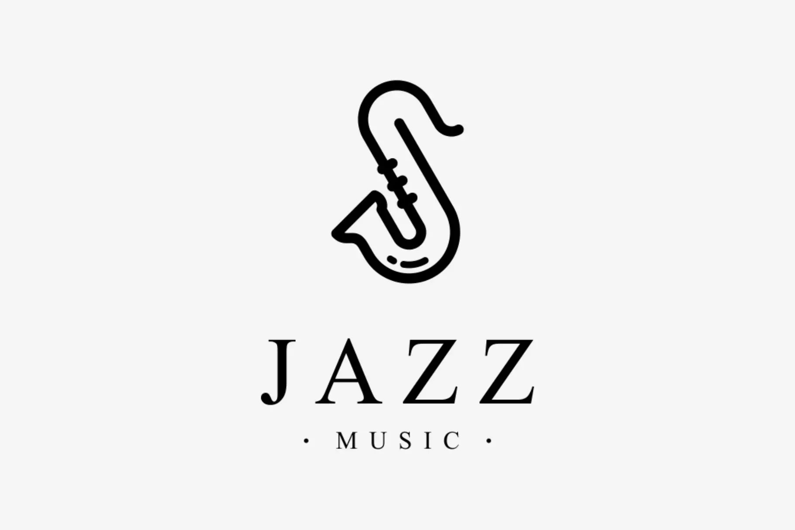

La cumbia es un baile de Colombia, país suramericano, que se originó en la Costa Caribe de estas tierras en los tiempos de la colonia. Esta danza es la fusión de tres culturas; la africana, la indígena y la española que se combinaron para convertirse en la expresión coreográfica y musical más representativa.

Nace como fenómeno underground entre las barriadas rurales de Panamá y Puerto Rico, como una variante del reggae y el Hip-Hop en español, influenciado por ritmos latinos y tomando como base rítmica el danceHall reggae mejor conocido como dembow originario de Jamaica.
La música electrónica puede caracterizarse como un género musical que se crea y produce utilizando instrumentos electrónicos y electromecánicos, diversos instrumentos digitales o la llamada tecnología musical basada en circuitos.
El cuarteto es un género de música popular de Córdoba (Argentina), que se caracteriza por un ritmo movido y tropical, que se escucha en toda la Argentina y algunos países sudamericanos. Desde su creación en los años cuarenta fue bailado exclusivamente por la clase trabajadora, y despreciado por la clase media y alta.

El jazz es un género o estilo musical que surge de la mezcla de diferentes melodías y ritmos afro-norteamericanos, considerado como uno de los más famosos y populares estilos de música del mundo.

El rock es un amplio género de música popular originado a principios de la década de 1950 en Estados Unidos y que derivaría en un gran rango de diferentes estilos a mediados de los años 1960 y posteriores, particularmente en ese país y Reino Unido.

La salsa es un género musical que surge de la mezcla de ritmos latinos tan reconocidos como el chachachá, el mambo y el son, entre otros, con el uso de instrumentos y estilos estadounidenses.
El tango es una manifestación surgida en el siglo XIX de la fusión de aportes afroamericanos, criollos y la inmigración europea. La tradición argentina y uruguaya del tango, hoy conocida en el mundo entero, nació en la cuenca del Río de la Plata, entre las clases populares de las ciudades de Buenos Aires y Montevideo.